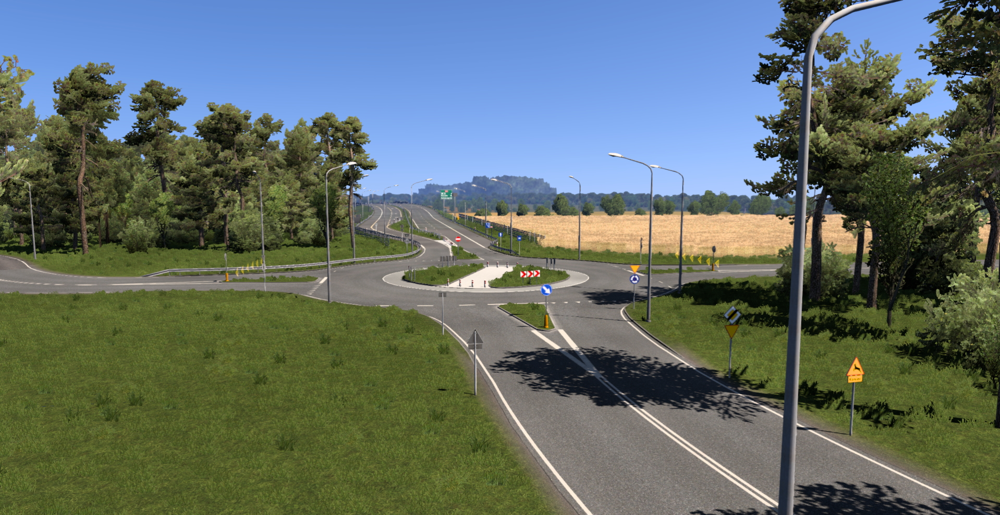

Następna aktualizacja:
| Wersja | Data wydania |
|---|---|
0%
Aktualności
10.04.2025
Wydanie
Aktualizacja 10.0 jest już dostępna!
S6 Addon wychodzi poza Zachodniopomorskie! Dzięki temu została dodana...

27.09.2024
Wydanie
Aktualizacja 9.1 jest już dostępna!
W tej aktualizacja zostały przebudowane:
- DK11 i DW165 Koszalin -> Piła...
27.09.2024
Ogólne
Mała aktualizacja strony
Zmiana numerów dróg z tekstowych na obrazki w pobieralni oraz...

26.07.2024
Stan prac
v9.1 - 1
W tej aktualizacji zostanie dodana budowa drogi S11 Bobolice - Szczecinek...